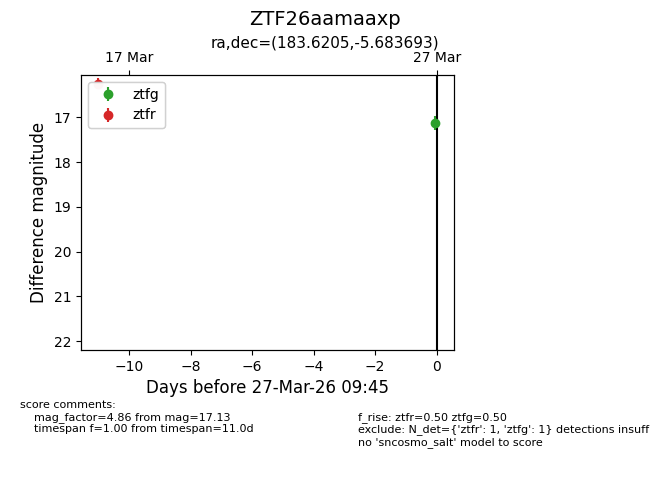
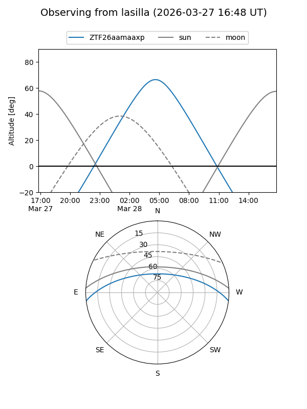
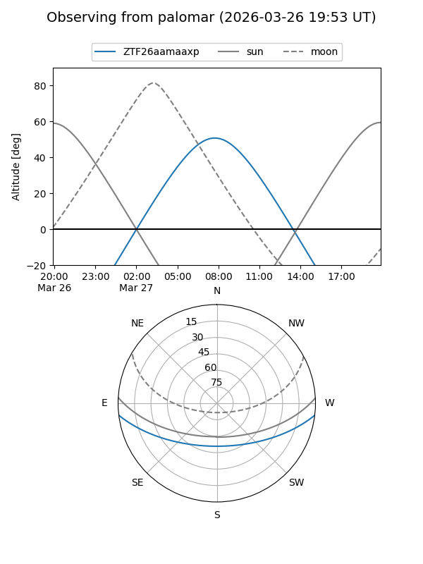

ZTF26aamaaxp
Target ZTF26aamaaxp at 2026-03-27 09:48
Aliases and brokers:
FINK: link
Lasair: link
ALeRCE: link
alt names
ZTF26aamaaxp (ztf,fink_ztf)
Coordinates:
equatorial (ra, dec) = 183.6205,-5.68369
equatorial (HMS+DMS) = 12:14:28.91,-05:41:01.29
galactic (l, b) = (286.3343,+55.99254)
Flags:
Photometry:
last ztfg=17.13, ztfr=16.25
1 ztfg, 1 ztfr detections
Lightcurve

Visibility


Additional plots